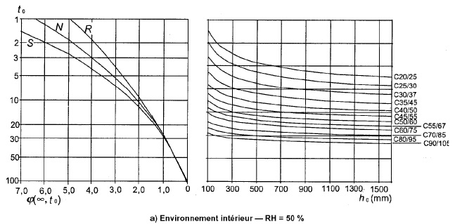
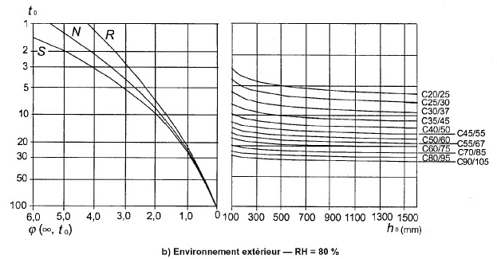

{{ loadTime }} j
{{ h0 | number : "1.0-0" }}
{{ cementClass }}
⯆
{{ fluageCoeff | number : "1.0-3" }}
Etape {{ step }} : {{ stepNames[step] }}
Ac = {{ Ac | number : "1.0-0" }} mm²
uc = {{ uc | number : "1.0-0" }} mm
h0 = 2 x Ac / uc = {{ h0 | number : "1.0-0" }} mm

